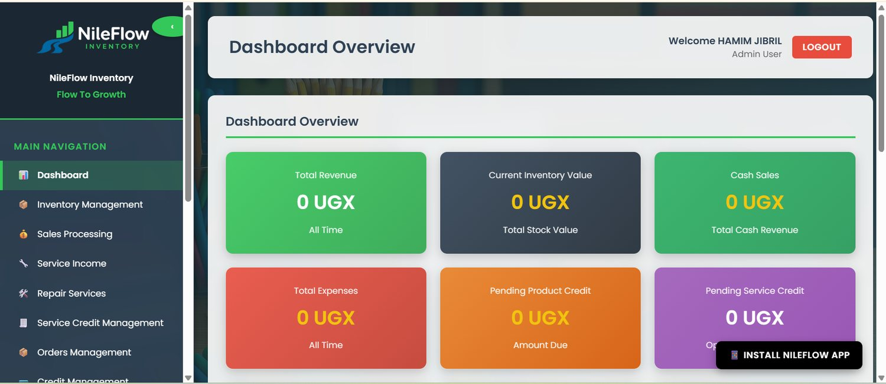

01 · FLAGSHIP
PHP · MySQL · JavaScript
NileFlow Inventory Management
A multi-branch inventory and sales management system designed for businesses that need better control over stock, branch activity, purchases, sales and reporting.
Problem
Stock and sales become difficult to control when business activity is spread across branches.
Solution
A centralized platform for stock, purchases, transfers, users, credit sales and reporting.
What I learned
Multi-branch workflows, permissions, real business rules and iterative client-driven development.
PRODUCT WALKTHROUGH
From overview to day-to-day operations.
Selected screens from the working system, showing how NileFlow brings stock, credit and reporting into one interface.

Dashboard overviewBusiness performance at a glance